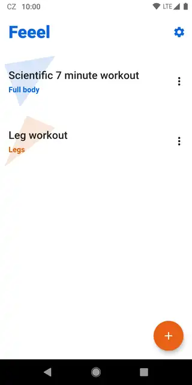

Feeel - التدريبات المنزلية
صحة ورياضة
Feeel هو تطبيق Android مفتوح المصدر للقيام بتمارين بسيطة في المنزل. إنه يحمل نظام التمرين العلمي لكامل الجسم لمدة 7 دقائق ويسمح بإنشاء تدريبات مخصصة أيضًا. بينما يحتوي التطبيق حاليًا على قدر محدود من التمارين ، فإن الخطة تهدف إلى زيادة عدد التمارين والتدريبات بشكل كبير بمساعدة المجتمع. ساهم على http
✓ ترخيص مفتوح (AGPL-3.0-or-later) · آخر تحديث: 2022-11-24
2.4.1الإصدار
61.2 MBالحجم
AGPL-3.0-or-laterالرخصة
Open in Kanzتحميل APK (61.2 MB)
Download APK
SHA-256: 0e706395a9e3620d9323392b7a7a494c0ac502aa6f5b9d875d40bf3b7857ad81

تطبيقات تانية لنفس المطوّر (3)
More apps from this developer: com.enjoyingfoss
امسح الكود لفتح صفحة التطبيق
Scan to open this app page
لو كنز مش متثبت عندك: نزّل متجر كنز.
Not installed? Get the Kanz store.